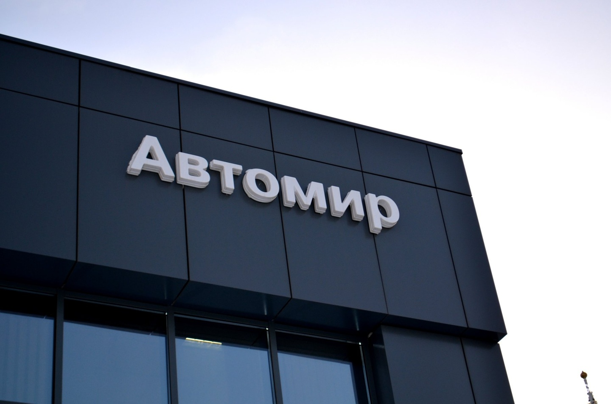

О компании

Группа компаний Автомир – один из самых крупных игроков на российском авторынке. Марочный портфель компании включает в себя более 30 автомобильных брендов: Audi, Chery, Citroen, Ford, Geely, Haval, Hyundai, Kia, LADA, Mazda, Mitsubishi, Nissan, Peugeot, Renault, Skoda, Suzuki, Toyota, Volkswagen, Changan, DongFeng, FAW, Omoda, Evolute, Exeed, JAC, Sollers, Kaiyi, TANK, Москвич, Jetour, Jetta, Baic, Livan, Jaecoo.
Торговая сеть компании состоит из 41 дилерского центра: в Москве, российских регионах (Санкт-Петербург, Архангельск, Брянск, Воронеж, Екатеринбург, Краснодар, Нижний Новгород, Новокузнецк, Новосибирск, Самара, Саратов, Сургут, Челябинск, Ярославль) и в Казахстане (Астана, Караганда и Алматы). В 2023 году дилерские центры Компании включают в себя 91 марочный шоу-рум.
ГК Автомир на сегодняшний день является одним из крупнейших автомобильных ритейлеров в России по объему продаж, а также входит в ТОП-5 автодилеров РФ по выручке. За всю историю существования компанией было реализовано более 1 791 000 автомобилей, из которых порядка 1 464 500 новых.
Основные направления деятельности ГК Автомир
Штат компании составляет более 5 000 человек. Сотрудники регулярно проходят специализированное обучение по маркам у автопроизводителей. Кроме того, в компании открыт собственный учебный центр, где проходят модульные профессиональные курсы, тренинги и семинары, мастер-классы экспертов бизнеса. Для специалистов Автомира действует программа подготовки Кадрового резерва.
История компании
ГК «Автомир» является одним из крупнейших автодилеров на российском рынке
История и этапы развития ГК «Автомир»
1993 – 2023
1993
ГК «Автомир» присутствует на российском автомобильном рынке с 1993 года. На сегодняшний день ГК «Автомир» является одним из крупнейших автомобильных ритейлеров в России по объёму продаж, входит в ТОП-5 автодилеров по выручке.
1994
Открытие первого форматного автосалона. Объем продаж превысил 100 автомобилей в месяц.
1995 – 1999
Зарегистрирован торговый знак «Автомир». В портфеле брендов появляются марки Skoda, Renault, Nissan и Suzuki. Открытие сайта www.avtomir.ru.
2000 – 2004
Построен и запущен первый собственный дилерский центр, созданный по всем стандартам автопроизводителей. В марочном портфеле появляются бренды Kia, Citroen, Volkswagen, Hyundai.
2005 – 2009
Развитие Группы Компаний в регионах: открытие региональных комплексов в Санкт-Петербурге, Брянске, Воронеже, Самаре, Ярославле, Архангельске, Сургуте, Новокузнецке, Воронеже и Орле, а также двух дилерских центров в Казахстане. Компанией получено дилерство по маркам Toyota, Mazda, General Motors (Opel, Chevrolet), Ford и Mitsubishi.
2010 – 2014
Торговая сеть насчитывает 48 объектов, в марочном портфеле Компании 19 брендов. В 2012-2015 гг. Автомир – первый официальный дистрибьютор автомобилей Nissan в Казахстане. С ноября 2014 года Автомир стал эксклюзивным дилером Infiniti в Казахстане.
2015 – 2016
В феврале 2015 года был продан миллионный автомобиль. Дилерскую сеть «Автомира» пополнили автосалоны в Краснодаре и Нижнем Новгороде. В портфель брендов вернулась марка LADA.
2017 – 2019
В 2017 году заключено первое дилерское соглашение с маркой Audi: шоу-рум марки открылся в конце года в городе Новосибирске. В 2018 году было открыто 6 шоу-румов на действующих объектах компании по маркам Mazda, Ford, Renault и Mitsubishi. В 2019 году в портфеле брендов появилась новая марка Haval – были заключены дилерские контракты и открыты два шоу-рума в Москве и Ярославле.
2020 – 2021
В январе 2020 года марочный портфель компании пополнился маркой Geely – открыт шоу-рум в городе Екатеринбург. В течение года были запущены еще 8 шоу-румов марок Nissan, Geely, LADA, Haval, Suzuki и Mitsubishi в Москве, Брянске, Екатеринбурге, Саратове и Самаре. В декабре 2020 года «Автомир» возобновил сотрудничество с брендом Chery – шоу-рум по продажам и сервисному обслуживанию был открыт в Нижнем Новгороде. В течение всего года Компания активно развивала инструменты онлайн продаж. В 2021 году Компания открыла шоу-рум Suzuki в Архангельске и получила еще одну франшизу Chery в Москве. На начало 2022 года торговая сеть насчитывает 46 объектов, марочный портфель «Автомира» включает в себя все самые продаваемые в РФ среднеценовые бренды.
2022
В 2022 году Компания смогла оперативно адаптироваться под новые рыночные условия и существенно изменить структуру марочного портфеля. Часть шоурумов брендов, приостановивших или прекративших работу на рынке РФ, была переведена в статус сервисных контрактов, а торговая сеть «Автомира» пополнилась новыми марками и объектами. По итогам года было получено 14 франшиз по брендам Geely, Changan, FAW, JAC, Dongfeng, Evolute, Omoda и Exeed в Москве, Самаре, Воронеже, Брянске, Архангельске и Новокузнецке, а также началась работа по подписанию дилерских контрактов с марками Москвич, Sollers, KAIYI и TANK.
2023
В 2023 году «Автомир» продолжил курс на оптимизацию марочного портфеля, по итогам года было получено рекордное количество новых франшиз: 35 в России и 1 в Казахстане. Заключены дилерские контракты с новыми брендами Jaecoo, Jetta, Jetour, Livan в Москве, Архангельске, Самаре, Саратове и Сургуте. Также продолжилось развитие отношений с уже представленными в торговой сети Компании марками: Changan (открытие ДЦ в Санкт-Петербурге), Geely (открытие новых центров в Самаре, Воронеже и Новосибирске), Exeed в Челябинске, Omoda в Москве и JAC в Краснодаре. Развитие Компании в Казахстане отметилось открытием дилерского центра марки Geely в городе Астана. В конце года «Автомир» начал сотрудничество с Belgee и Haval PRO.